单点登录原理与简单实现
单系统登录机制
web 应用采用 browser/server 架构，http 作为通信协议。http 是无状态协议，浏览器的每一次请求，服务器会独立处理，不与之前或之后的请求产生关联，这个过程用下图说明，三次请求/响应对之间没有任何联系。
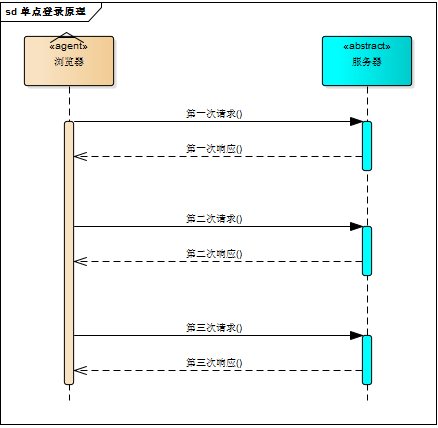
无状态的 Http 协议
但这也同时意味着，任何用户都能通过浏览器访问服务器资源，如果想保护服务器的某些资源，必须限制浏览器请求；要限制浏览器请求，必须鉴别浏览器请求，响应合法请求，忽略非法请求；要鉴别浏览器请求，必须清楚浏览器请求状态。既然 http 协议无状态，那就让服务器和浏览器共同维护一个状态吧！这就是会话机制。
会话机制
浏览器第一次请求服务器，服务器创建一个会话，并将会话的 id 作为响应的一部分发送给浏览器，浏览器存储会话 id，并在后续第二次和第三次请求中带上会话 id，服务器取得请求中的会话 id 就知道是不是同一个用户了，这个过程用下图说明，后续请求与第一次请求产生了关联。
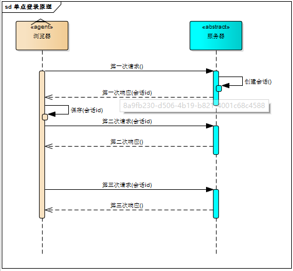
会话机制
服务器在内存中保存会话对象，浏览器怎么保存会话 id 呢？
你可能会想到两种方式
- 请求参数
- cookie
将会话 id 作为每一个请求的参数，服务器接收请求自然能解析参数获得会话 id，并借此判断是否来自同一会话，很明显，这种方式不靠谱。那就浏览器自己来维护这个会话 id 吧，每次发送 http 请求时浏览器自动发送会话 id，cookie 机制正好用来做这件事。cookie 是浏览器用来存储少量数据的一种机制，数据以"key/value"形式存储，浏览器发送 http 请求时自动附带 cookie 信息。
tomcat 会话机制当然也实现了 cookie，访问 tomcat 服务器时，浏览器中可以看到一个名为JSESSIONID的 cookie，这就是 tomcat 会话机制维护的会话 id，使用了
cookie 的请求响应过程如下图：
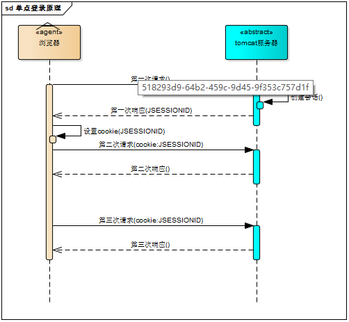
JSESSIONID
登录状态
有了会话机制，登录状态就好明白了，我们假设浏览器第一次请求服务器需要输入用户名与密码验证身份，服务器拿到用户名密码去数据库比对，正确的话说明当前持有这个会话的用户是合法用户，应该将这个会话标记为“已授权”或者“已登录”等等之类的状态，既然是会话的状态，自然要保存在会话对象中，tomcat 在会话对象中设置登录状态如下：
HttpSession session = request.getSession();
session.setAttribute("isLogin", true);
用户再次访问时，tomcat 在会话对象中查看登录状态：
HttpSession session = request.getSession();
session.getAttribute("isLogin");
实现了登录状态的浏览器请求服务器模型如下图描述：
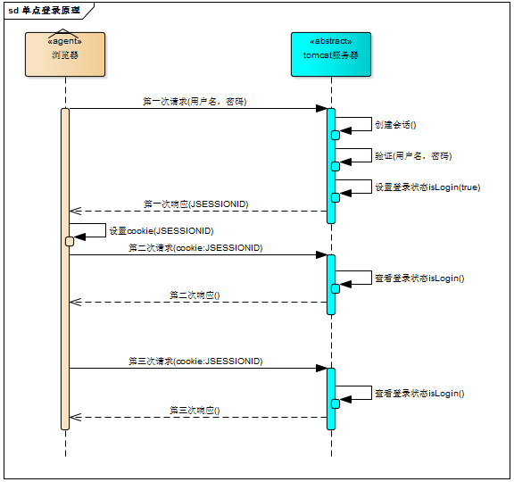
登录状态控制
每次请求受保护资源时都会检查会话对象中的登录状态，只有 isLogin=true 的会话才能访问，登录机制因此而实现。
多系统的复杂性
web 系统早已从久远的单系统发展成为如今由多系统组成的应用群，面对如此众多的系统，用户难道要一个一个登录、然后一个一个注销吗？就像下图描述的这样
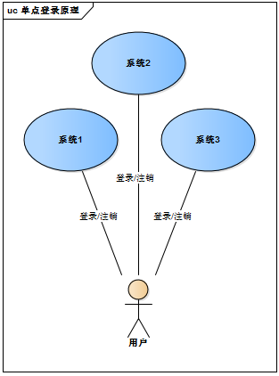
多系统
web 系统由单系统发展成多系统组成的应用群，复杂性应该由系统内部承担，而不是用户。无论 web 系统内部多么复杂，对用户而言，都是一个统一的整体，也就是说，用户访问 web 系统的整个应用群与访问单个系统一样，登录/注销只要一次就够了。
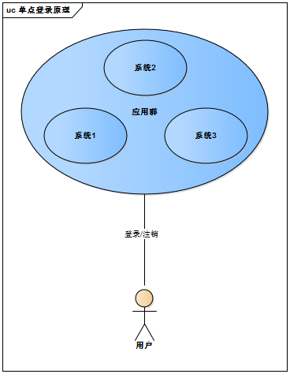
单系统的登录
虽然单系统的登录解决方案很完美，但对于多系统应用群已经不再适用了，为什么呢？
单系统登录解决方案的核心是 cookie，cookie 携带会话 id 在浏览器与服务器之间维护会话状态。但 cookie 是有限制的，这个限制就是 cookie 的域（通常对应网站的域名），浏览器发送 http 请求时会自动携带与该域匹配的 cookie，而不是所有 cookie。

跨域名
子域名 cookie 共享完成单点登录
既然这样，为什么不将 web 应用群中所有子系统的域名统一在一个顶级域名下，例如“*.baidu.com”，然后将它们的 cookie
域设置为“baidu.com”，这种做法理论上是可以的，甚至早期很多多系统登录就采用这种同域名共享 cookie 的方式。
然而，可行并不代表好，共享 cookie 的方式存在众多局限。
- 首先，应用群域名得统一。
- 其次，应用群各系统使用的技术（至少是 web 服务器）要相同，不然 cookie 的 key 值（tomcat 为 JSESSIONID）不同，无法维持会话，共享 cookie 的方式是无法实现跨语言技术平台登录的，比如 java、php、.net 系统之间。
- 第三，cookie 本身不安全。
除上面之外，如果我们在session存放的是User对象，那么我们使用全局 cookie 共享JSESSIONID值，每一个子域名就可以访问同一个 session，登录成功后保存一个
user 对象，注销后就移除这个 user 对象。session 中的 user 对象必须先序列化保存到 redis 中，并且每次访问的时候，都需要去 redis 中取出
session，并且重新序列化成 user 对象。这样会造成额外的消耗。
因此，我们需要一种全新的登录方式来实现多系统应用群的登录，这就是单点登录。
单点登录
什么是单点登录？
单点登录全称 Single Sign On（以下简称 SSO），是指在多系统应用群中登录一个系统，便可在其他所有系统中得到授权而无需再次登录，包括单点登录与单点注销两部分。
登录
相比于单系统登录，sso 需要一个独立的认证中心，只有认证中心能接受用户的用户名密码等安全信息，其他系统不提供登录入口，只接受认证中心的间接授权。间接授权通过令牌实现，sso 认证中心验证用户的用户名密码没问题，创建授权令牌，在接下来的跳转过程中，授权令牌作为参数发送给各个子系统，子系统拿到令牌，即得到了授权，可以借此创建局部会话，局部会话登录方式与单系统的登录方式相同。
这个过程，也就是单点登录的原理，用下图说明：
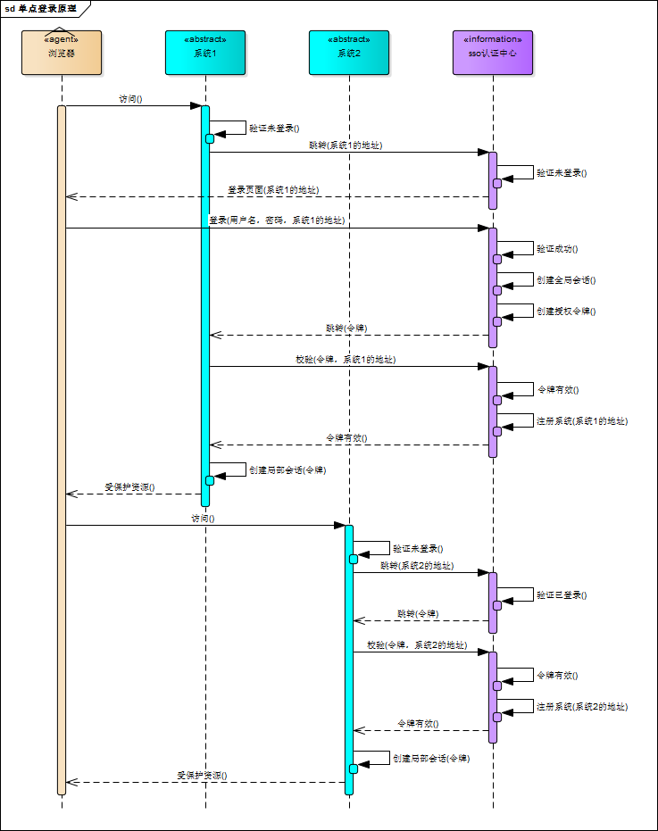
单点登录
下面对上图简要描述：
- 用户访问系统 1 的受保护资源，系统 1 发现用户未登录，跳转至 sso 认证中心，并将自己的地址作为参数。
- sso 认证中心发现用户未登录，将用户引导至登录页面。
- 用户输入用户名密码提交登录申请。
- sso 认证中心校验用户信息，创建用户与 sso 认证中心之间的会话，称为全局会话，同时创建授权令牌。
- sso 认证中心带着令牌跳转会最初的请求地址（系统 1）。
- 系统 1 拿到令牌，去 sso 认证中心校验令牌是否有效。
- sso 认证中心校验令牌，返回有效，注册系统 1。
- 系统 1 使用该令牌创建与用户的会话，称为局部会话，返回受保护资源。
- 用户访问系统 2 的受保护资源。
- 系统 2 发现用户未登录，跳转至 sso 认证中心，并将自己的地址作为参数。
- sso 认证中心发现用户已登录，跳转回系统 2 的地址，并附上令牌。
- 系统 2 拿到令牌，去 sso 认证中心校验令牌是否有效。
- sso 认证中心校验令牌，返回有效，注册系统 2。
- 系统 2 使用该令牌创建与用户的局部会话，返回受保护资源。
用户登录成功之后，会与 sso 认证中心及各个子系统建立会话，用户与 sso 认证中心建立的会话称为全局会话，用户与各个子系统建立的会话称为局部会话，局部会话建立之后，用户访问子系统受保护资源将不再通过 sso 认证中心，全局会话与局部会话有如下约束关系：
- 局部会话存在，全局会话一定存在。
- 全局会话存在，局部会话不一定存在。
- 全局会话销毁，局部会话必须销毁。
你可以通过博客园、百度、csdn、淘宝等网站的登录过程加深对单点登录的理解，注意观察登录过程中的跳转 url 与参数
注销
单点登录自然也要单点注销，在一个子系统中注销，所有子系统的会话都将被销毁，用下面的图来说明：
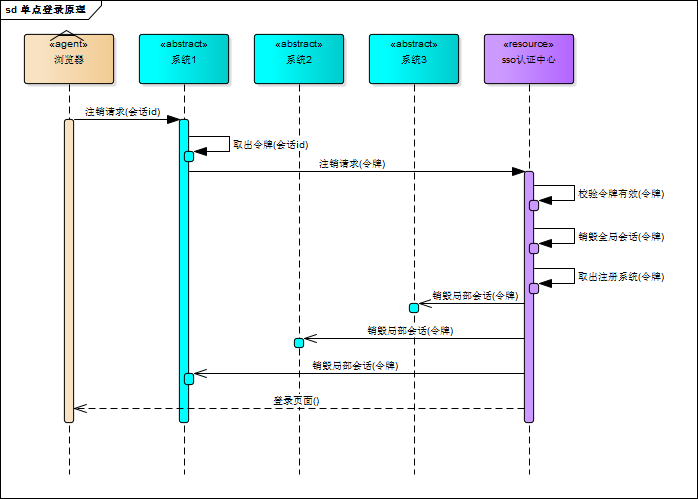
单点注销
sso 认证中心一直监听全局会话的状态，一旦全局会话销毁，监听器将通知所有注册系统执行注销操作
下面对上图简要说明：
- 用户向系统 1 发起注销请求。
- 系统 1 根据用户与系统 1 建立的会话 id 拿到令牌，向 sso 认证中心发起注销请求。
- sso 认证中心校验令牌有效，销毁全局会话，同时取出所有用此令牌注册的系统地址。
- sso 认证中心向所有注册系统发起注销请求。
- 各注册系统接收 sso 认证中心的注销请求，销毁局部会话。
- sso 认证中心引导用户至登录页面。
部署图
单点登录涉及 sso 认证中心与众子系统，子系统与 sso 认证中心需要通信以交换令牌、校验令牌及发起注销请求，因而子系统必须集成 sso 的客户端，sso 认证中心则是 sso 服务端，整个单点登录过程实质是 sso 客户端与服务端通信的过程，用下图描述：

部署图
sso 认证中心与 sso 客户端通信方式有多种，这里以简单好用的 httpClient 为例，web service、rpc、restful api 都可以。
实现
只是简要介绍下基于 java 的实现过程，不提供完整源码，明白了原理，我相信你们可以自己实现。sso 采用客户端/服务端架构，我们先看 sso-client 与 sso-server 要实现的功能（下面：sso 认证中心=sso-server）。
sso-client
- 拦截子系统未登录用户请求，跳转至 sso 认证中心。
- 接收并存储 sso 认证中心发送的令牌。
- 与 sso-server 通信，校验令牌的有效性。
- 建立局部会话。
- 拦截用户注销请求，向 sso 认证中心发送注销请求。
- 接收 sso 认证中心发出的注销请求，销毁局部会话。
sso-server
- 验证用户的登录信息。
- 创建全局会话。
- 创建授权令牌。
- 与 sso-client 通信发送令牌。
- 校验 sso-client 令牌有效性。
- 系统注册。
- 接收 sso-client 注销请求，注销所有会话。
接下来，我们按照原理来一步步实现 sso 吧！
sso-client 拦截未登录请求
java 拦截请求的方式有 servlet、filter、listener 三种方式，我们采用 filter。在 sso-client 中新建 LoginFilter.java 类并实现 Filter 接口，在 doFilter()方法中加入对未登录用户的拦截：
public void doFilter(ServletRequest request, ServletResponse response, FilterChain chain) throws IOException, ServletException {
HttpServletRequest req = (HttpServletRequest) request;
HttpServletResponse res = (HttpServletResponse) response;
HttpSession session = req.getSession();
if (session.getAttribute("isLogin")) {
chain.doFilter(request, response);
return;
}
//跳转至sso认证中心
res.sendRedirect("sso-server-url-with-system-url");
}
sso-server 拦截未登录请求
拦截从 sso-client 跳转至 sso 认证中心的未登录请求，跳转至登录页面，这个过程与 sso-client 完全一样。
sso-server 验证用户登录信息
用户在登录页面输入用户名密码，请求登录，sso 认证中心校验用户信息，校验成功，将会话状态标记为“已登录”。
@RequestMapping("/login")
public String login(String username, String password, HttpServletRequest req) {
this.checkLoginInfo(username, password);
req.getSession().setAttribute("isLogin", true);
return "success";
}
sso-server 创建授权令牌
授权令牌是一串随机字符，以什么样的方式生成都没有关系，只要不重复、不易伪造即可，下面是一个例子：
String token = UUID.randomUUID().toString();
sso-client 取得令牌并校验
sso 认证中心登录后，跳转回子系统并附上令牌，子系统（sso-client）取得令牌，然后去 sso 认证中心校验，在 LoginFilter.java 的 doFilter()中添加几行：
// 请求附带token参数
String token = req.getParameter("token");
if (token != null) {
// 去sso认证中心校验token
boolean verifyResult = this.verify("sso-server-verify-url", token);
if (!verifyResult) {
res.sendRedirect("sso-server-url");
return;
}
chain.doFilter(request, response);
}
verify()方法使用 httpClient 实现，这里仅简略介绍，httpClient 详细使用方法请参考官方文档。
HttpPost httpPost = new HttpPost("sso-server-verify-url-with-token");
HttpResponse httpResponse = httpClient.execute(httpPost);
sso-server 接收并处理校验令牌请求
- 用户在 sso 认证中心登录成功后，sso-server 创建授权令牌并存储该令牌，所以，sso-server 对令牌的校验就是去查找这个令牌是否存在以及是否过期，令牌校验成功后 sso-server 将发送校验请求的系统注册到 sso 认证中心（就是存储起来的意思）
- 令牌与注册系统地址通常存储在 key-value 数据库（如 redis）中，redis 可以为 key 设置有效时间也就是令牌的有效期。redis 运行在内存中，速度非常快，正好 sso-server 不需要持久化任何数据。
- 令牌与注册系统地址可以用下图描述的结构存储在 redis 中，可能你会问，为什么要存储这些系统的地址？如果不存储，注销的时候就麻烦了，用户向 sso 认证中心提交注销请求，sso 认证中心注销全局会话，但不知道哪些系统用此全局会话建立了自己的局部会话，也不知道要向哪些子系统发送注销请求注销局部会话。
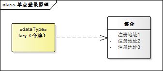
sso-client 校验令牌成功创建局部会话
令牌校验成功后，sso-client 将当前局部会话标记为“已登录”，修改 LoginFilter.java，添加几行：
if (verifyResult) {
session.setAttribute("isLogin", true);
}
sso-client 还需将当前会话 id 与令牌绑定，表示这个会话的登录状态与令牌相关，此关系可以用 java 的 hashmap 保存，保存的数据用来处理 sso 认证中心发来的注销请求
注销过程
用户向子系统发送带有“logout”参数的请求（注销请求），sso-client 拦截器拦截该请求，向 sso 认证中心发起注销请求：
String logout = req.getParameter("logout");
if (logout != null) {
this.ssoServer.logout(token);
}
sso 认证中心也用同样的方式识别出 sso-client 的请求是注销请求（带有“logout”参数），sso 认证中心注销全局会话：
@RequestMapping("/logout")
public String logout(HttpServletRequest req) {
HttpSession session = req.getSession();
if (session != null) {
session.invalidate();//触发LogoutListener
}
return "redirect:/";
}
sso 认证中心有一个全局会话的监听器，一旦全局会话注销，将通知所有注册系统注销
public class LogoutListener implements HttpSessionListener {
@Override
public void sessionCreated(HttpSessionEvent event) {}
@Override
public void sessionDestroyed(HttpSessionEvent event) {
//通过httpClient向所有注册系统发送注销请求
}
}
代码部署
GitHub 地址： https://github.com/morethink/simple-sso.git
IDEA 部署
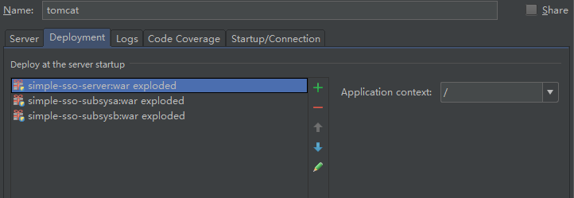
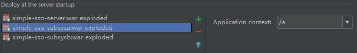

单点登录
访问 a 系统：
http://localhost/a/test
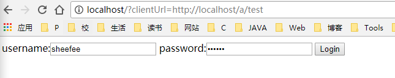
访问 b 系统：
http://localhost/b/test

a 系统登录成功：
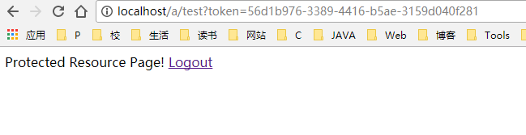
b 系统同时也登录成功: